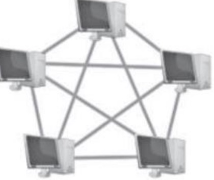

Es el conjunto de instrumentos empleados para manejar informacion por medio de la computadora como el procesador de texto, la base de datos, graficadores, correo electronico, hoja de calculo, buscadores, programas de diseño, presentadores, redes de telecomunicaciones, etc.
Son el conjunto de recursos, herramientas, equipos, programas informaticos, apliaciones, redes y medios; que permien la complicacion procesamiento, almacenaiento, transmisión de informacion con: voz, datos, texto, video e imagenes en rpo de la eficiencia y la agilidad.
| Ventajas de las tics | Desventajas de las tics | |
|---|---|---|
| En la educacion |
Acceso a diversas fuentes de informacion.
Comunicacion en el tiempo real. Mayor interaccion. Desarrollo de nuevas habilidades fuera del curriculo oficial. Aprendizaje personalizado. |
Riesgo de desigualdad y exclusion.
Pueden ser una fuente de distracion. Acceso a informacion de baja calidad. Disminuyen las habilidades manuales. |
| En la sociedad |
Democratización del acceso a la informacion.
Optimización de trámites borucraticos. Acceso a productos y servicios sin limites geograficos. Acceso a nuevas tecnologias a precios accesibles. |
Peligro de exposicion de datos personales.
Acceso a informacion falsa. Exclusion y desiguldad. |
| En las empresas |
Eficiencia en la toma de desiciones.
Nuevas modalidades de rabajo. Nuevas oportubidades de cresimiento. |
Reduccion de puestos de trabajo.
Riesgos de ciberataque. |
| En el hogar |
Facilitan la comunicacion.
Permiten el acceso a la educacion y el trabajo. |
Menos interaccion familiar.
Contenido inapropiado. |
Los beneficios de las TICS en la gestion de empreas te brinda la oportunidad de analizar datos especificos para planificar negocios. Tambien te ofrecera diversas herramientas resolutivas para los problemas mas complejos y para planificar la crecida de tu negocio
Es un conjunto de computadoras de software que estan conectados por dispositivos que reciben y envian informacion por transmision guiada, transmision inalambrica o satelites de comunicacion con el objetivo de compartir recursos como datos, programas y hardware.

| ventajas | desventajas |
|---|---|
|
Compartir software y harware
Compartir e intercambiar archivos entre los equipos. Centralizar programas de gestión (los usuarios pueden acceder al mismo programa para trabajar en el simultáneamente). Realizar copias de seguridad automáticamente. Organización efectiva. Mejorar la comunicación y la disponibilidad de indformación Una vez implementadas son economicas y ahorran tiempo comunicacion rapida y eficiente posibilidad de manejo y control a distancia de nuestra computadora mejora la forma de trabajo individual |
Carece de independencia
Existen muchos riesgos por lo que se deben tomar muchas medidas de seguridad. Se requiere personal capacitado para la administración y el mantenimiento de las redes. El costo para la implementación inicial es alto. Costos de operación y mantenimiento. Si se depende dela conexión a internet y falla va a caer la red falla, se puede ver las consecuencias en tiempo, dinero y esfuerzo |
Cada computadora conectada a una red se denomina host o terminal.
Los servidores son computadoras que proporcionan información a los terminales de la red. Por ejemplo: servidores de correo electrónico, servidores web o servidores de archivos.
Los clientes son computadoras que envian solicitudes a los servidores para recuperar información, como una página web desde un servidor web o un correo electrónico desde un servidor de correo electrónico.
La infraestructura de red son todos los recursos que hacen posible la conectividad, la gestión, las operaciones comerciales y la comunicación de la red o Internet. La infraestructura de red comprende hardware y software, sistemas y dispositivos, y permite la informática y la comunicación entre usuarios, servicios, aplicaciones y procesos.


Los datos se orifinan con un disositivo final, fluyen por la red y llegan a un dispositivo final.
| Medio. | Ventajas. | Desventajas. |
|---|---|---|
| Cable coaxial |
Permite la transmision de voz, datos y video de manera simultanea.
tiene un bajo costo y su intalacion es sencilla y rapida. Cuenta con una banda anchaconcapacidad de 10 Mb/segundo. |
No hay modelación de frecuencias.
Hace uso de conectores especiales para la conexion fisica. Ofrece poca inmunidad frente a los ruidos, aqunque puede mejorarse con filtros. |
| Cable de par trenzado (UTP,FTP,FTP) |
Dan muy buenas presentaciones para redes de area localizacion.
Facilidad de utilizacion e instalacion. Bajo costo de fabricacion y adquisicion. Gran capacidad de transmision de datos en redes de area. Rapida conectividad y actualizable. |
No son inmunes al ruidos.
Ancho de banda limitado. Distancia limitada y necesidades de repetidores. Tasas de error a considerar en altas velocidades. |
| Fibra optica. |
Ocupa poco espacio.
Facil enstalación. Es liviana. Presenta una gran recistencia. Es mas ecologica. Inmune a interferencias electromagneticas Veloz, eficaz y segura. |
Mas costos que los medios de cobre para la misma distancia.
Son fragiles Requiere de conversores. Envejece ante la presencia del agua. |
| Inalambrico. |
Accesibilidad.
Facil instalacion. Mayor cobertura. Flexibilidad. Movil y portatil. Escalabilidad. Eficiencia. |
Seguridad.
Ancho de banda limitado. Velocidad. Son propensas a las interferencias. Alcance. |

| Red. | Definicion. | Alcance. |
|---|---|---|
| Red de area local (LAN). | Son redes que se limita a un area relativamente pequeña tal como un cuarto, un solo edificio. | 200 m a 1 km |
| Red de area amplia (WAN) | Son redes informáticas que se extienden sobre un área geográfica muy extensa, país o continentes, utilizando medios como: satélites, cables interoceánicos y fibra óptica. | Miles de kilometros. |
| Redes de area personal (PAN) | Es una red de ordenadores usada para la comunicación entre los dispositivos de la computadora cerca de una persona. | 10 metros |
| Red de area metropolitana (MAN) | Es una red de alta velocidad (banda ancha) que da cobertura a un área geográfica más extensa, por ejemplo, una red que interconecte los edificios públicos de un municipio dentro de la localidad por medio de fibra óptica. | Hasta 50 km |
| Red global | Utilizan la infraestructura de fibra de vidrio de las redes de área amplia (Wide Area Networks) y las agrupan mediante cables submarinos internacionales o transmisión por satélite | miles de kilometros |
| Red de area de canpues (CAN) | Es una red inalambrica para comunicar varios edificios que se encuentran a más de 1km en el mimso campus o empresa. | 1 a 3 km |
| Red de areas del almacenamiento (SAN) | es una red propia para las empresas que trabajan con servidores y no quieren perder rendimiento en el tráfico de usuario, ya que manejan una enorme cantidad de datos. | limitado |
Todos los nodos de la red se conectan a un solo cable principal, que sirve a todos los dispositivos. Este es uno de los tipos de redes más fáciles de configurara, pero al agregar demasiados dispositivos puede afectar la velocidad de la red a medida que la red troncal se congestiona. Este tipo de red también es increíblemente frágil, ya que una falla en cualquier punto de la red desconectara toda la red.

Son redes punto a punto en las que cada nodo está conectado a su vecino inmediato en ambos lados, con datos que viajan alrededor del anillo en una dirección hasta que alcanza el nodo correcto. La falla de un solo nodo provocara una interrupción en toda la red. Esta forma de red no requiere un servidor para administrarla.

Las topologías de árbol son una evolución del modelo de estrella e involucran múltiples redes estelares unidas por un bus central. Las redes de árbol generalmente se consideran como la topología más escalable, ya que es fácil expandirse mediante la adición de redes de estrellas adicionales.

Es cuando hay más de una conexión entre nodos. Esta puede ser una topología de "malla completa", en la que cada nodo está vinculado a cada otro nodo, o una malla parcial, en la que solo algunos nodos utilizan conexiones múltiples. Esta forma de red es compleja de configurar y administrar, pero incluye un alto nivel de redundancia contra fallas de red.

Es cuando hay más de una conexión entre nodos. Esta puede ser una topologia de "malla completa", en la que cada nodo está vinculado a cada otro nodo, o una malla parcial, en la que solo algunos nodos utilizan conexiones múltiples. Esta forma de red es compleja de configurar y administrar, pero incluye un alto nivel de redundancia contra fallas de red.
Internet es un conjunto de centralizado de redes de comunicación interconectadas, que se utilizan la familia de protocolos TCP/IP, lo cual garantiza que las redes físicas heterogéneas que la componen constituyen una red lógica única de alcance mundial
una pagina web, pagina electronica o pagina digital es un documento digital de caracter multimediatico (capaz de incluir audio, video, texto y sus conbinaciones), adaptando a los estandares dela World Wide Web (www) y a la que se puede acceder a traves de un navegador web y una conexion activa a interne. las paginas we se encuentran almacenadas en servidores, a los que es posible acceder velozmente gracias a un sistema de protocolos de comunicacion
| tipos de pagina | estatica | dinamica |
|---|---|---|
| caracteristicas |
se programa en el lenguaje html
no permite interacción con el usuario son informativas, documentales y no interactivas |
se programa en el lenguaje PHP
permite la interaccion con el usuario ofrece una respuesta a los reuerimintos del usuario |
El comercio electronico o ecommerce es el comercio de bienes y servicios .internet permite a individuos y a empresas comprar y vender una cantidad cada vez mayor de bienes fisicos, digitales y servicios de forma electronica.El comercio electronico conecta alrededores con clientes y permite intercambios a travez de internet.pueden funcionar de muchas maneras y adaptar varias formas.
El comrcio aparece desde que comienzan las relaciones humanas